install.packages("sf")
install.packages("terra")
install.packages("tidyverse")
install.packages("rnaturalearth")Raster Data: Climate Exposure and Tower Similarity
Mapping climate surfaces
Vector data told us where FLUXNET CH4 towers are located. Raster data lets us ask what environmental conditions surround those towers. In this workshop, we will use gridded climate layers to evaluate the climate exposure represented by methane tower sites and to identify towers that may be useful analogs for thinking about methane fluxes in Yale-Myers Forest wetlands.
We will ask:
What climate conditions do FLUXNET CH4 towers represent, and which towers are most similar to Yale-Myers Forest?
By the end of this workshop, you will be able to:
- Read and inspect raster data with
terra. - Understand
SpatRasterandSpatVectorobjects. - Crop and mask rasters to an area of interest.
- Use raster algebra to create new climate layers.
- Summarize raster values globally and by polygon zones.
- Extract raster values to point locations.
- Compare tower-site climate exposure to gridded climate space.
- Calculate environmental dissimilarity among tower sites.
- Use multidimensional scaling (MDS) to visualize which towers are more or less similar.
Install libraries for this workshop
Load libraries
library(terra)
library(tidyverse)
library(rnaturalearth)
library(sf)What is a raster?
A raster is a spatial data structure that subdivides an area into cells, often called pixels. Each cell stores one or more values. Climate rasters are useful because they let us describe environmental gradients everywhere, not only at point locations.
The terra package is built around two important classes:
SpatRaster: gridded raster data.SpatVector: vector data such as points, lines, or polygons.
Read climate rasters
This course includes a global climate raster with four layers:
MAP: mean annual precipitation in mm.TMIN: mean minimum temperature in degrees C.TMAX: mean maximum temperature in degrees C.MAT: mean annual temperature in degrees C.
global_climate <- rast("data/GlobalClimate.tif")
global_climateclass : SpatRaster
size : 3343, 8640, 4 (nrow, ncol, nlyr)
resolution : 0.04166667, 0.04166667 (x, y)
extent : -180, 180, -55.625, 83.66667 (xmin, xmax, ymin, ymax)
coord. ref. : +proj=longlat +ellps=WGS84 +no_defs
source : GlobalClimate.tif
names : MAP, TMIN, TMAX, MAT
min values : 0.0, -50.4, -9.3, -27.10833
max values : 12390.2, 26.6, 53.7, 34.14167
unit : mm, Degrees C, Degrees C, Degrees C Look at the layer names:
names(global_climate)[1] "MAP" "TMIN" "TMAX" "MAT" Plot mean annual precipitation:
plot(global_climate$MAP,
main = "Mean annual precipitation")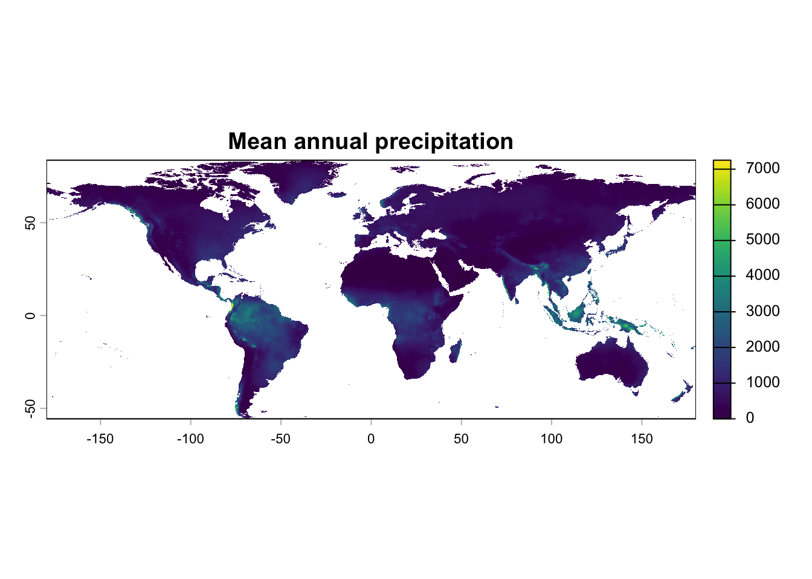
Plot mean annual temperature:
plot(global_climate$MAT,
main = "Mean annual temperature")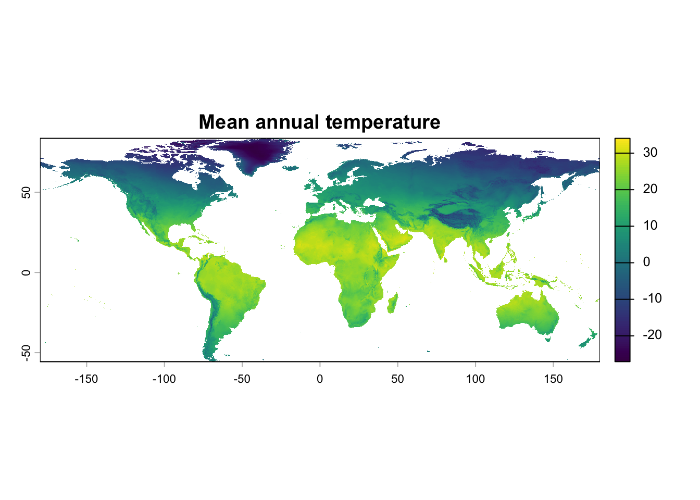
Raster algebra
Raster algebra lets us create new layers from existing layers. Temperature range is a simple measure of climate exposure:
temp_range <- global_climate$TMAX - global_climate$TMIN
names(temp_range) <- "temp_range"Combine the original climate layers with the new temperature range layer:
climate_stack <- c(global_climate, temp_range)
names(climate_stack)[1] "MAP" "TMIN" "TMAX" "MAT" "temp_range"Plot the new raster:
plot(climate_stack$temp_range,
main = "Temperature range")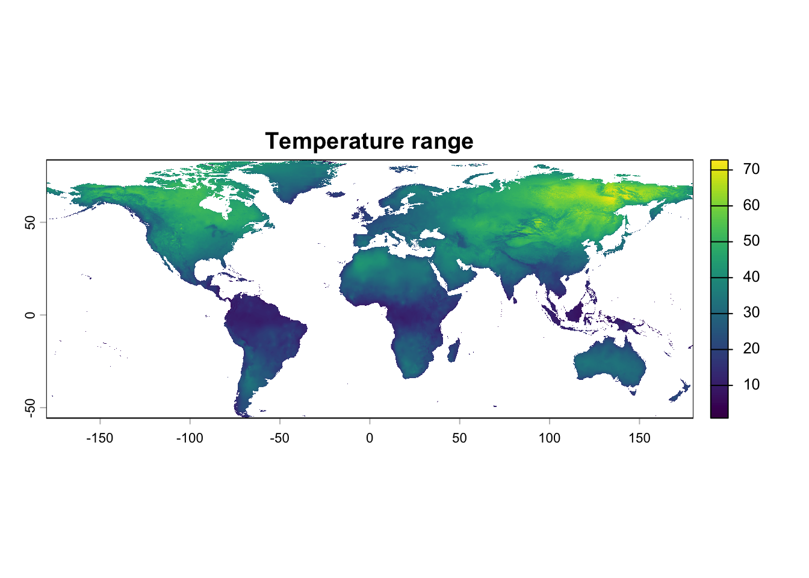
Use global() when you want one summary value for an entire raster layer:
global(climate_stack, fun = "mean", na.rm = TRUE) mean
MAP 703.303657
TMIN -7.993425
TMAX 26.229376
MAT 8.737725
temp_range 34.222801Crop and mask to an area of interest
Cropping trims a raster to a rectangular extent. Masking removes cells outside an area of interest. Here we use countries from rnaturalearth to create a South America polygon and summarize climate over that region.
world <- ne_countries(scale = "medium", returnclass = "sf") %>%
filter(continent %in% c("Europe", "Asia", "North America",
"South America", "Africa", "Oceania")) %>%
st_make_valid()
south_america <- world %>%
filter(continent == "South America") %>%
st_union() %>%
st_as_sf()Crop and mask mean annual precipitation to South America:
south_america_ppt <- climate_stack$MAP %>%
crop(south_america) %>%
mask(south_america)Warning: [mask] CRS do not matchplot(south_america_ppt,
main = "Mean annual precipitation in South America")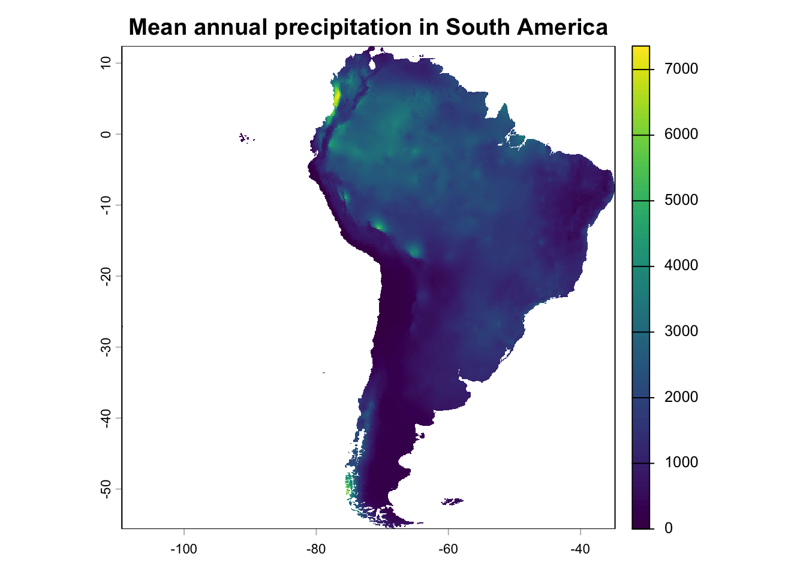
What did the crop and mask operations return?
class(south_america_ppt)[1] "SpatRaster"
attr(,"package")
[1] "terra"south_america_pptclass : SpatRaster
size : 1633, 1791, 1 (nrow, ncol, nlyr)
resolution : 0.04166667, 0.04166667 (x, y)
extent : -109.4167, -34.79167, -55.625, 12.41667 (xmin, xmax, ymin, ymax)
coord. ref. : +proj=longlat +ellps=WGS84 +no_defs
source(s) : memory
varname : GlobalClimate
name : MAP
min value : 0.0
max value : 7358.6
unit : mm Zonal summaries
Zonal summaries calculate raster statistics inside polygon zones. Here we calculate mean annual precipitation for each country in South America. Keeping the example regional makes the computation faster while preserving the same workflow.
south_america_countries <- world %>%
filter(continent == "South America")
country_ppt <- zonal(x = south_america_ppt,
z = vect(south_america_countries),
fun = "mean",
as.polygons = TRUE,
na.rm = TRUE)What did zonal() return?
class(country_ppt)[1] "SpatVector"
attr(,"package")
[1] "terra"Convert the result back to an sf object and map it:
country_ppt_sf <- st_as_sf(country_ppt)
ggplot(data = country_ppt_sf) +
geom_sf(aes(fill = MAP), color = NA) +
scale_fill_viridis_c(na.value = "transparent") +
labs(title = "Country-level mean annual precipitation in South America",
fill = "MAP (mm)")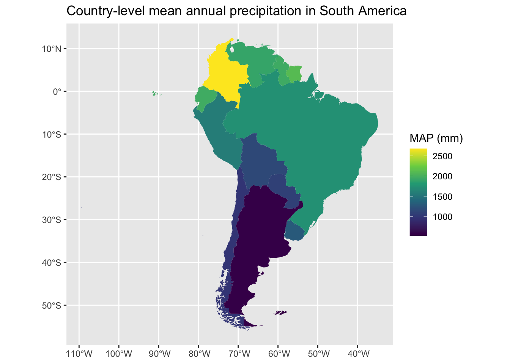
Which South American countries have the highest mean annual precipitation in this dataset?
country_ppt_sf %>%
st_drop_geometry() %>%
select(name, continent, MAP) %>%
arrange(desc(MAP)) %>%
head() name continent MAP
1 Colombia South America 2679.383
2 Suriname South America 2102.898
3 Ecuador South America 1963.294
4 Guyana South America 1952.710
5 Venezuela South America 1906.277
6 Brazil South America 1741.940Connecticut and Yale-Myers Forest
This course also includes Connecticut climate rasters for 2021. We can use them to practice with multi-layer rasters and to extract climate information for Yale-Myers Forest.
ct_ppt_2021 <- rast("data/TERRA_PPT_2021_CT.tif")
ct_tmean_2021 <- rast("data/TERRA_TMEAN_2021_CT.tif")Each raster has one layer per month. Keep the 2021 months:
ct_ppt_2021 <- ct_ppt_2021[[1:12]]
ct_tmean_2021 <- ct_tmean_2021[[1:12]]
names(ct_ppt_2021) [1] "ppt_2021-01-01_total" "ppt_2021-02-01_total" "ppt_2021-03-01_total"
[4] "ppt_2021-04-01_total" "ppt_2021-05-01_total" "ppt_2021-06-01_total"
[7] "ppt_2021-07-01_total" "ppt_2021-08-01_total" "ppt_2021-09-01_total"
[10] "ppt_2021-10-01_total" "ppt_2021-11-01_total" "ppt_2021-12-01_total"names(ct_tmean_2021) [1] "tmin_2021-01-01_total" "tmin_2021-02-01_total" "tmin_2021-03-01_total"
[4] "tmin_2021-04-01_total" "tmin_2021-05-01_total" "tmin_2021-06-01_total"
[7] "tmin_2021-07-01_total" "tmin_2021-08-01_total" "tmin_2021-09-01_total"
[10] "tmin_2021-10-01_total" "tmin_2021-11-01_total" "tmin_2021-12-01_total"Summarize monthly Connecticut layers to annual precipitation and mean temperature:
ct_annual_ppt_2021 <- sum(ct_ppt_2021, na.rm = TRUE)
names(ct_annual_ppt_2021) <- "ppt_2021"
ct_mean_tmean_2021 <- mean(ct_tmean_2021, na.rm = TRUE)
names(ct_mean_tmean_2021) <- "tmean_2021"Plot the Connecticut rasters:
plot(ct_annual_ppt_2021,
main = "Connecticut 2021 annual precipitation")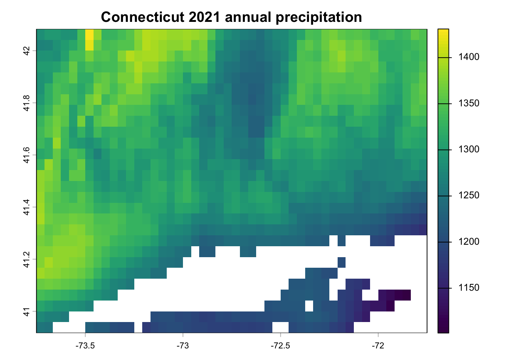
plot(ct_mean_tmean_2021,
main = "Connecticut 2021 mean temperature")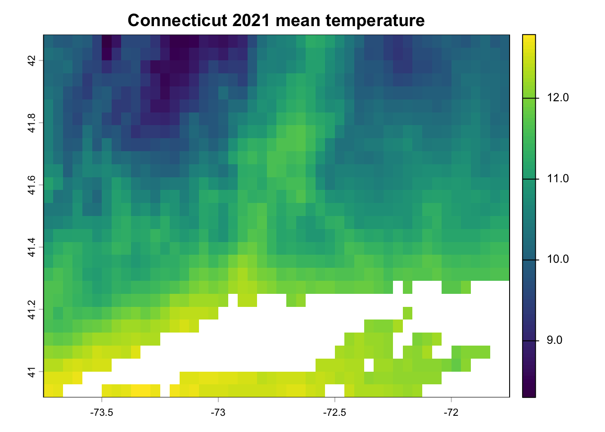
Create a Yale-Myers Forest point. These are the same coordinates used in the Data Basics workshop:
yale_myers_sf <- tibble(
SITE_ID = "Yale-Myers",
SITE_NAME = "Yale-Myers Forest wetlands",
IGBP = "WET",
LOCATION_LAT = 41.952909,
LOCATION_LONG = -72.123859
) %>%
st_as_sf(coords = c("LOCATION_LONG", "LOCATION_LAT"),
crs = 4326,
remove = FALSE)Extract 2021 Connecticut climate values for Yale-Myers:
yale_myers_ct_climate <- terra::extract(c(ct_annual_ppt_2021, ct_mean_tmean_2021),
vect(yale_myers_sf))Warning: [extract] transforming vector data to the CRS of the rasteryale_myers_ct_climate ID ppt_2021 tmean_2021
1 1 1354.7 9.8125Map Yale-Myers on the Connecticut precipitation raster:
ct_annual_ppt_df <- as.data.frame(ct_annual_ppt_2021,
xy = TRUE,
na.rm = TRUE)
ggplot(data = ct_annual_ppt_df) +
geom_raster(aes(x = x, y = y, fill = ppt_2021)) +
geom_sf(data = yale_myers_sf,
color = "red",
size = 3,
inherit.aes = FALSE) +
scale_fill_viridis_c(na.value = "transparent") +
labs(title = "Yale-Myers Forest on Connecticut 2021 precipitation",
fill = "Precipitation (mm)")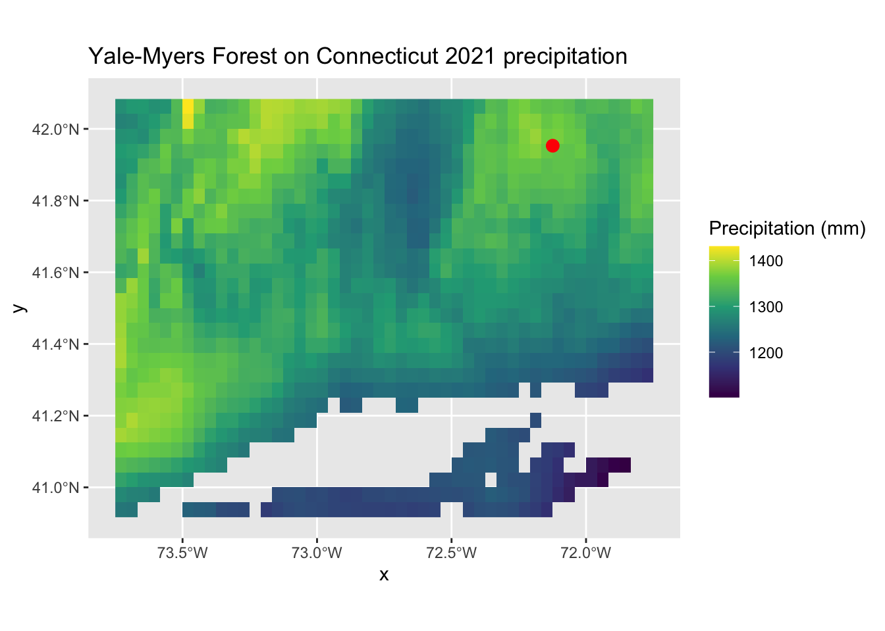
Extract raster climate to tower sites
Read the FLUXNET site table and create point locations for all sites with coordinates:
fluxnet_sites <- read.csv("data/FluxNet_Sites_2024.csv")
fluxnet_sites_located <- fluxnet_sites %>%
filter(!is.na(LOCATION_LONG), !is.na(LOCATION_LAT)) %>%
mutate(site_group = if_else(FLUXNET.CH4 != "",
"CH4 site",
"Other FLUXNET site"))
fluxnet_sites_sf <- st_as_sf(fluxnet_sites_located,
coords = c("LOCATION_LONG", "LOCATION_LAT"),
crs = 4326,
remove = FALSE)Extract the global climate layers to each tower point:
tower_climate_values <- terra::extract(climate_stack,
vect(fluxnet_sites_sf)) %>%
select(-ID) %>%
rename_with(~ paste0("raster_", .x))Warning: [extract] transforming vector data to the CRS of the rastertower_climate <- fluxnet_sites_sf %>%
st_drop_geometry() %>%
bind_cols(tower_climate_values)Look at the extracted values:
tower_climate %>%
select(SITE_ID, SITE_NAME, site_group, IGBP,
raster_MAP, raster_MAT, raster_TMIN, raster_TMAX, raster_temp_range) %>%
head() SITE_ID SITE_NAME site_group IGBP raster_MAP raster_MAT
1 AR-SLu San Luis Other FLUXNET site MF 418.1 18.07500
2 AR-Vir Virasoro Other FLUXNET site ENF 1591.6 20.94583
3 AT-Neu Neustift CH4 site GRA 1000.3 5.30000
4 AU-ASM Alice Springs Other FLUXNET site SAV 324.4 22.76250
5 AU-Ade Adelaide River Other FLUXNET site WSA 1409.4 27.30417
6 AU-Cpr Calperum Other FLUXNET site SAV 248.5 17.49583
raster_TMIN raster_TMAX raster_temp_range
1 2.2 33.2 31.0
2 9.6 32.8 23.2
3 -7.2 19.6 26.8
4 7.0 36.3 29.3
5 16.5 36.3 19.8
6 4.8 33.4 28.6Add Yale-Myers Forest to the extracted climate table:
yale_myers_global_values <- terra::extract(climate_stack,
vect(yale_myers_sf)) %>%
select(-ID) %>%
rename_with(~ paste0("raster_", .x))Warning: [extract] transforming vector data to the CRS of the rasteryale_myers_climate <- yale_myers_sf %>%
st_drop_geometry() %>%
mutate(site_group = "Yale-Myers reference",
FLUXNET.CH4 = "Yale-Myers reference") %>%
bind_cols(yale_myers_global_values)
climate_context <- bind_rows(
tower_climate,
yale_myers_climate
)Raster-based representativeness
Compare CH4 tower climate conditions with all FLUXNET tower locations:
ggplot(data = tower_climate,
aes(x = raster_MAT, y = raster_MAP, color = site_group)) +
geom_point(alpha = 0.75) +
labs(title = "Climate space represented by FLUXNET tower sites",
x = "Mean annual temperature (degrees C)",
y = "Mean annual precipitation (mm)",
color = "Site group")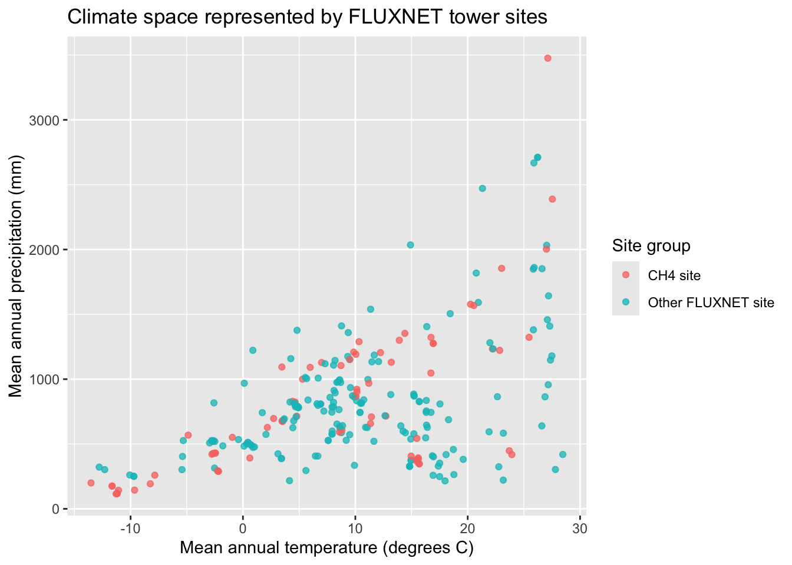
Add Yale-Myers Forest:
ggplot(data = climate_context,
aes(x = raster_MAT, y = raster_MAP, color = site_group)) +
geom_point(alpha = 0.75) +
geom_point(data = yale_myers_climate,
color = "red",
size = 4) +
labs(title = "Yale-Myers Forest in raster-derived climate space",
x = "Mean annual temperature (degrees C)",
y = "Mean annual precipitation (mm)",
color = "Site group")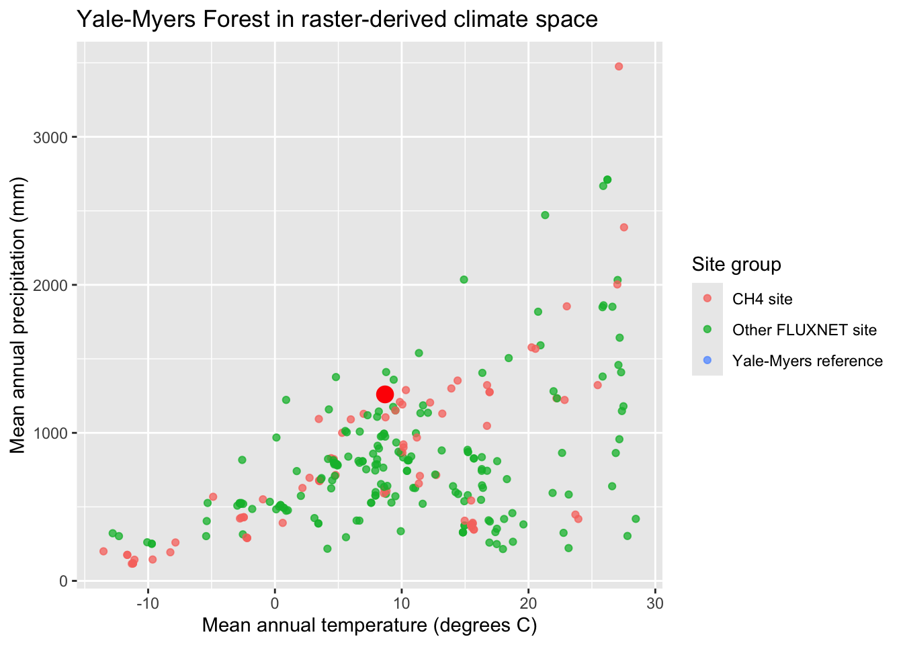
Compare tower locations with a sample of global raster cells:
set.seed(730)
global_climate_sample <- spatSample(climate_stack[[c("MAT", "MAP")]],
size = 1000,
method = "regular",
na.rm = TRUE,
as.df = TRUE) %>%
select(MAT, MAP)
ggplot() +
geom_point(data = global_climate_sample,
aes(x = MAT, y = MAP),
color = "gray85",
alpha = 0.3) +
geom_point(data = tower_climate %>% filter(site_group == "CH4 site"),
aes(x = raster_MAT, y = raster_MAP, color = IGBP),
alpha = 0.85) +
geom_point(data = yale_myers_climate,
aes(x = raster_MAT, y = raster_MAP),
color = "red",
size = 4) +
labs(title = "CH4 towers and Yale-Myers relative to sampled global climate space",
subtitle = "Gray points are sampled raster cells",
x = "Mean annual temperature (degrees C)",
y = "Mean annual precipitation (mm)",
color = "IGBP")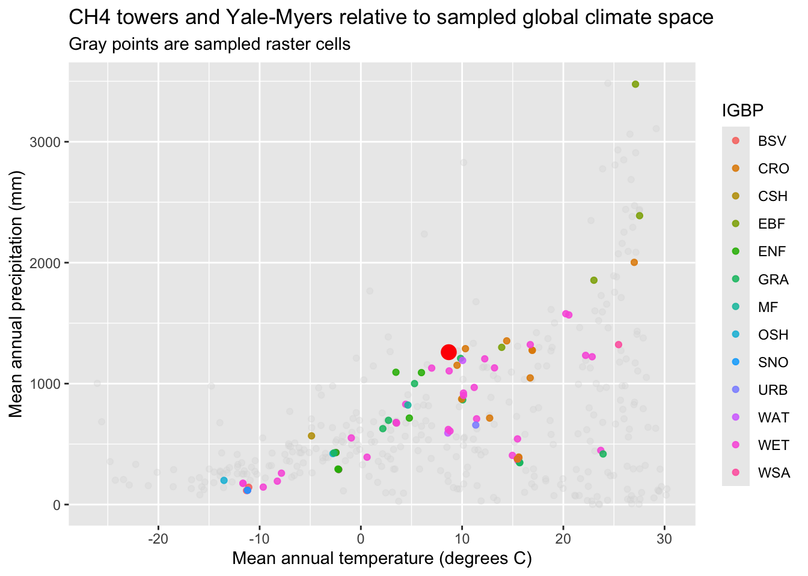
Environmental dissimilarity among CH4 towers
To identify which towers are more or less similar to Yale-Myers Forest, we can compare sites using their raster-derived climate variables. We will use standardized Euclidean distance so variables with large units, such as precipitation, do not dominate the comparison only because of scale.
For this first-pass analysis, we will compare sites using:
raster_MAP;raster_MAT;raster_TMIN;raster_TMAX;raster_temp_range.
climate_vars <- c("raster_MAP", "raster_MAT", "raster_TMIN",
"raster_TMAX", "raster_temp_range")
analog_candidates <- climate_context %>%
filter(site_group %in% c("CH4 site", "Yale-Myers reference")) %>%
select(SITE_ID, SITE_NAME, IGBP, site_group, all_of(climate_vars)) %>%
drop_na()Scale the variables and calculate distances:
scaled_climate <- analog_candidates %>%
select(all_of(climate_vars)) %>%
scale()
climate_distance <- dist(scaled_climate)Calculate each CH4 tower’s distance from Yale-Myers Forest:
yale_index <- which(analog_candidates$SITE_ID == "Yale-Myers")
distance_to_yale <- as.matrix(climate_distance)[yale_index, ]
yale_myers_analogs <- analog_candidates %>%
mutate(distance_to_yale = as.numeric(distance_to_yale)) %>%
filter(SITE_ID != "Yale-Myers") %>%
arrange(distance_to_yale)Which CH4 towers are most similar to Yale-Myers based on these raster climate variables?
yale_myers_analogs %>%
select(SITE_ID, SITE_NAME, IGBP,
raster_MAP, raster_MAT, raster_temp_range, distance_to_yale) %>%
head(10) SITE_ID SITE_NAME IGBP raster_MAP
1 JP-SwL Suwa Lake WAT 1191.7
2 KR-CRK Cheorwon Rice paddy CRO 1289.0
3 JP-BBY Bibai bog WET 1128.5
4 US-OWC Old Woman Creek WET 921.8
5 US-MRM Marsh Resource Meadowlands Mitigation Bank WET 1204.9
6 US-WPT Winous Point North Marsh WET 902.0
7 US-ORv Olentangy River Wetland Research Park WET 968.5
8 US-CRT Curtice Walter-Berger cropland CRO 872.4
9 US-Ho1 Howland Forest (main tower) ENF 1091.0
10 US-StJ St Jones Reserve WET 1130.0
raster_MAT raster_temp_range distance_to_yale
1 10.050000 35.0 0.2927306
2 10.329166 39.5 0.3866336
3 6.995833 36.9 0.4132268
4 10.133333 35.4 0.6681738
5 12.237500 33.9 0.6834487
6 10.141666 35.5 0.6965766
7 11.195833 35.8 0.6970053
8 9.954166 36.7 0.7464651
9 5.983333 41.4 0.7499126
10 13.200000 33.6 0.8358843Because Yale-Myers wetlands are wetlands, it may be useful to separately inspect wetland towers:
yale_myers_analogs %>%
filter(IGBP == "WET") %>%
select(SITE_ID, SITE_NAME, IGBP,
raster_MAP, raster_MAT, raster_temp_range, distance_to_yale) %>%
head(10) SITE_ID SITE_NAME IGBP raster_MAP
1 JP-BBY Bibai bog WET 1128.5
2 US-OWC Old Woman Creek WET 921.8
3 US-MRM Marsh Resource Meadowlands Mitigation Bank WET 1204.9
4 US-WPT Winous Point North Marsh WET 902.0
5 US-ORv Olentangy River Wetland Research Park WET 968.5
6 US-StJ St Jones Reserve WET 1130.0
7 DE-SfN Schechenfilz Nord WET 1104.9
8 US-Los Lost Creek WET 829.3
9 FI-Si2 Siikaneva-2 Bog WET 673.7
10 US-NC4 NC_AlligatorRiver WET 1322.4
raster_MAT raster_temp_range distance_to_yale
1 6.995833 36.9 0.4132268
2 10.133333 35.4 0.6681738
3 12.237500 33.9 0.6834487
4 10.141666 35.5 0.6965766
5 11.195833 35.8 0.6970053
6 13.200000 33.6 0.8358843
7 8.720834 27.6 1.1275138
8 4.429167 41.5 1.1571608
9 3.525000 33.5 1.4264502
10 16.733334 28.9 1.4403105
Interpret analogs carefully
This is a climate-similarity analysis, not proof that a tower is a perfect analog for Yale-Myers wetlands. Methane fluxes also depend on water table depth, wetland type, soils, vegetation, disturbance history, and measurement design. The goal is to identify towers that may be useful starting points for comparison.
MDS visualization
Multidimensional scaling (MDS) takes a distance matrix and places sites into a low-dimensional space. Sites that plot closer together are more similar based on the variables used to calculate the distance.
mds <- cmdscale(climate_distance, k = 2)
mds_scores <- analog_candidates %>%
bind_cols(as.data.frame(mds) %>%
rename(MDS1 = V1, MDS2 = V2))Label Yale-Myers and the five most similar CH4 towers:
label_sites <- mds_scores %>%
filter(SITE_ID == "Yale-Myers" |
SITE_ID %in% yale_myers_analogs$SITE_ID[1:5])Plot the MDS:
ggplot(data = mds_scores,
aes(x = MDS1, y = MDS2)) +
geom_point(aes(color = site_group, shape = IGBP == "WET"),
alpha = 0.75,
size = 2.5) +
geom_text(data = label_sites,
aes(label = SITE_ID),
nudge_y = 0.12,
size = 3) +
labs(title = "MDS of CH4 tower climate similarity",
subtitle = "Distance calculated from raster-derived climate variables",
x = "MDS axis 1",
y = "MDS axis 2",
color = "Site group",
shape = "Wetland tower")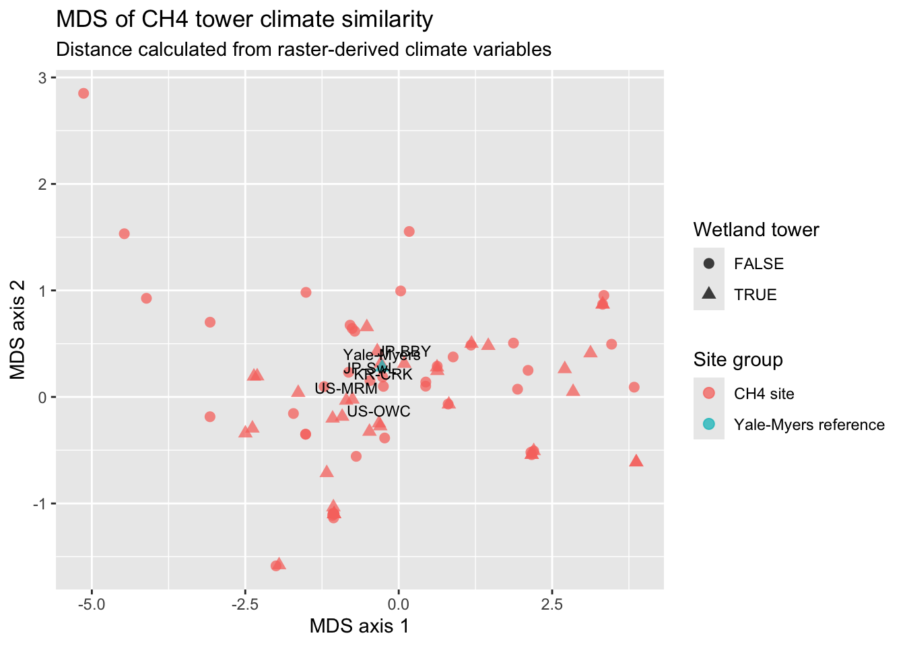
Assignment
Create a short raster evidence brief that evaluates climate exposure and tower similarity for Yale-Myers Forest wetlands.
Your report should answer:
- What precipitation and temperature conditions are represented by FLUXNET CH4 tower sites?
- Where does Yale-Myers Forest fall in raster-derived climate space?
- Which CH4 towers are most climatically similar to Yale-Myers Forest?
- Which wetland CH4 towers are most similar to Yale-Myers Forest?
- Based on the MDS plot and distance table, which towers would you prioritize as analogs for estimating or contextualizing methane fluxes from Yale-Myers wetlands?
- What important wetland controls are missing from this raster-only similarity analysis?
Include at least:
- one raster map;
- one climate-space plot;
- one distance or MDS figure;
- one table of candidate analog towers.
References
Fick, S.E. and R.J. Hijmans, 2017. WorldClim 2: new 1km spatial resolution climate surfaces for global land areas. International Journal of Climatology 37 (12): 4302-4315. https://doi.org/10.1002/joc.5086